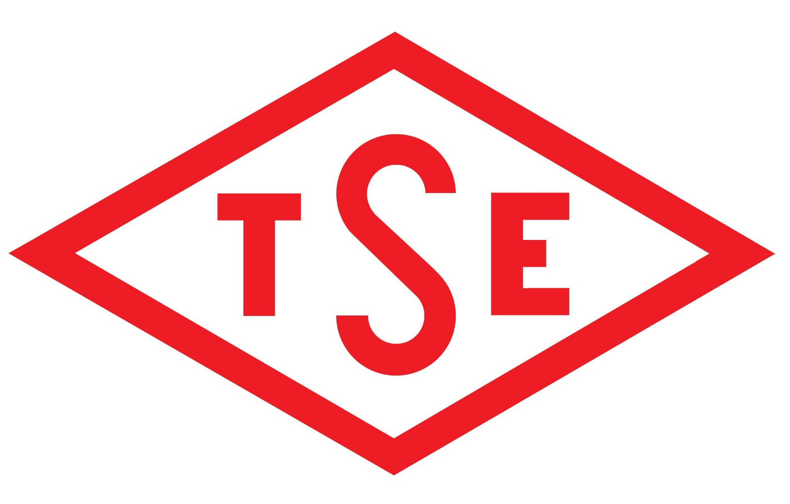

Aslan Teşvik Danışmanlık olarak, işletmelerin ürün ve hizmetlerinin kalite, güvenlik ve uygunluk
standartlarına ulaşmasını sağlamak amacıyla TSE Belgelendirme sürecinde profesyonel danışmanlık hizmetleri
sunuyoruz. TSE (Türk Standardları Enstitüsü), Türkiye’de ürün ve hizmetlerin belirli bir standarda
uygunluğunu belgeleyen ve bu standartların geliştirilmesini sağlayan yetkili bir kurumdur. TSE belgesi, ürün
ve hizmetlerin belirlenen ulusal veya uluslararası standartlara uygun olduğunu gösteren ve tüketiciye güven
veren bir işarettir.

TSE Belgesi Nedir?
TSE Belgesi, Türk Standardları Enstitüsü tarafından verilen ve bir ürünün veya hizmetin belirlenen
standartlara uygun olduğunu belgeleyen bir sertifikadır. TSE işareti, ürünlerin kalitesini, güvenliğini ve
dayanıklılığını garanti eder. Bu belge, hem yerel hem de uluslararası pazarda ürünlerin rekabet gücünü
artırmak için önemlidir.
TSE Belgesi, tüketicilere ürün ve hizmetlerin belirli bir kalite seviyesinde olduğunu ve ilgili mevzuatlara
uygun şekilde üretildiğini garanti eder. Bu nedenle, TSE belgesine sahip olan ürünler, tüketici nezdinde
daha güvenilir ve tercih edilebilir hale gelir.
TSE Belgesi Hangi Ürünler İçin Gereklidir?
TSE Belgesi, pek çok farklı ürün ve hizmet için alınabilen bir belgedir. Belgelendirme süreci, ürünün türüne
ve kullanılacağı sektöre bağlı olarak değişebilir. Genel olarak TSE belgesi alınabilecek ürün grupları
şunlardır:
- Gıda Ürünleri: Tüketiciye sunulan gıdaların güvenli ve hijyenik koşullarda üretildiğini
belgelemek için TSE belgesi alınabilir.
- Elektrikli ve Elektronik Cihazlar: Ev aletleri, ofis ekipmanları, telekomünikasyon cihazları gibi
ürünlerin TSE standartlarına uygun olduğunu belgelemek için.
- Makinalar ve Endüstriyel Ekipmanlar: İnşaat makineleri, tarım makineleri, üretim hattı
ekipmanları gibi ürünlerin güvenlik ve performans standartlarını karşılaması için.
- İnşaat Malzemeleri: Binalarda kullanılan yapı malzemelerinin dayanıklılık ve güvenlik açısından
TSE standartlarına uygunluğunu belgelemek için.
- Tekstil Ürünleri: Giyim, ev tekstili ve diğer tekstil ürünlerinin kalitesini ve güvenliğini
garanti altına almak için.
- Kimyasal Ürünler: Temizlik maddeleri, boya ve kaplama ürünleri gibi kimyasal ürünlerin güvenli ve
çevreye uygun şekilde üretildiğini belgelemek için.
Bu ürün gruplarının yanı sıra, birçok başka sektörde faaliyet gösteren ürün ve hizmetler için de TSE belgesi
alınabilir.
TSE Belgelendirme Süreci
TSE belgesi almak, belirli bir süreci takip etmeyi gerektirir. Bu süreç, ürünün veya hizmetin standarda
uygunluğunun değerlendirilmesi, test edilmesi ve belgeye hak kazanması ile sonuçlanır. Genel olarak TSE
belgelendirme süreci şu adımlardan oluşur:
- Standartların Belirlenmesi: Ürününüzün hangi TSE standartlarına tabi olduğunu belirleyin. TSE’nin
belirlediği ulusal ve uluslararası standartlar incelenerek, uygun standart seçimi yapılır.
- Başvuru Süreci: TSE belgesi almak için gerekli olan başvuru formlarının doldurulması ve ilgili
belgelerin temin edilmesi gereklidir. Bu belgeler arasında ürünle ilgili teknik bilgi ve üretim süreci
detayları yer alır.
- Test ve Değerlendirme: Ürün veya hizmet, TSE tarafından belirlenen standartlara uygunluğunun test
edilmesi için laboratuvar testlerine tabi tutulur. Bu testler, ürünün güvenlik, kalite ve performans
açısından standartlara uygunluğunu değerlendirir.
- Denetim: Üretim yerinin ve süreçlerinin, belirlenen standartlara uygun olup olmadığını belirlemek
için TSE yetkilileri tarafından yerinde denetim yapılabilir.
- Belgelendirme: Ürün veya hizmet, test ve denetim sürecinden başarıyla geçerse, TSE belgesi
verilir. Bu belge, ürünün belirli bir süre boyunca TSE standartlarına uygun olduğunu gösterir.
- Belge Yenileme ve Denetimler: TSE belgesi belirli bir süre geçerlidir. Bu süre sonunda belgeyi
yenilemek için yeniden testler ve denetimler yapılması gerekebilir.
Danışmanlık Hizmetlerimiz
Aslan Teşvik Danışmanlık olarak, TSE belgelendirme sürecinde işletmelere aşağıdaki hizmetleri sunuyoruz:
- Standart Belirleme ve Uygulama:Ürün veya hizmetinizin hangi TSE standartlarına uygun olduğunu
belirlemenize yardımcı oluruz.
- Başvuru Süreci Yönetimi:TSE belgesi için gerekli başvuruların doğru ve eksiksiz bir şekilde
yapılmasını sağlarız.
- Test ve Değerlendirme Desteği:Ürününüzün gerekli testlerden geçmesi ve uygunluk
değerlendirmesinin yapılması için gereken adımları yönetiriz.
- Denetim Hazırlığı: Üretim tesislerinizin TSE denetimlerine hazır hale getirilmesi için gerekli
hazırlıkları yaparız.
- Belge Yenileme Desteği: TSE belgesinin geçerlilik süresinin sonunda, belge yenileme sürecinde tam
destek sunarız.
Neden Aslan Teşvik Danışmanlık?
TSE belgelendirme süreci, uzmanlık ve dikkat gerektiren bir süreçtir. Aslan Teşvik Danışmanlık olarak, bu
süreçte yanınızda olarak, ürünlerinizin veya hizmetlerinizin TSE standartlarına uygunluğunu garanti altına
almanıza yardımcı oluyoruz.
- Uzmanlık: TSE belgelendirme süreçlerinde derin bilgi ve deneyime sahibiz
- Hızlı ve Güvenilir Hizmet: Süreci hızlandırarak, ürünlerinizin kısa sürede TSE belgesi almasını
sağlıyoruz.
- Bireysel Çözümler: Her sektör ve ürün için özelleştirilmiş çözümler sunuyoruz.
- Sürekli Destek: TSE belgelendirme sürecinin her aşamasında yanınızda oluyoruz.
Sonuç
TSE Belgesi, ürünlerinizin Türkiye pazarında ve uluslararası pazarda rekabet edebilmesi için önemli bir
gerekliliktir. Aslan Teşvik Danışmanlık olarak, TSE belgelendirme sürecinde profesyonel ve güvenilir
hizmetler sunarak, işletmenizin kalite standartlarına ulaşmasına yardımcı oluyoruz. TSE belgelendirme
hakkında daha fazla bilgi almak ve hizmetlerimizden yararlanmak için bizimle iletişime geçebilirsiniz.